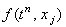
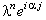
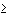
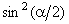

|
3.2. Устойчивость разностной схемы Кранка-Николсона
Исследуем устойчивость разностной схемы Кранка-Николсона
(4.18) с помощью спектрального метода. Для этого отбрасываем член , наличие которого,
как известно, не оказывает влияния на устойчивость разностной схемы, и представляем решение
в виде гармоники (3.7):
Далее, упрощаем полученное выражение, деля левую и правую его части на :
Используя зависимости (3.9), (3.10), получаем формулу
из которой выражаем  : :
Видно, что в полученном выражении числитель по абсолютному значению меньше знаменателя
(при > 0*
и k  0*). Следовательно, необходимое условие устойчивости разностных схем (3.8)
в данном случае выполняется при любых значениях  t и h; то есть, разностная схема
Кранка-Николсона (4.18) является абсолютно устойчивой. t и h; то есть, разностная схема
Кранка-Николсона (4.18) является абсолютно устойчивой.
Отметим, что при k < 0*
спектральный метод не будет гарантировать устойчивость разностной схемы (4.18), поскольку 
может принимать любые значения от 0 до 1 и при = 0 числитель будет больше знаменателя при
любом положительном t. Очевидно, данный случай требует особого метода решения.
|